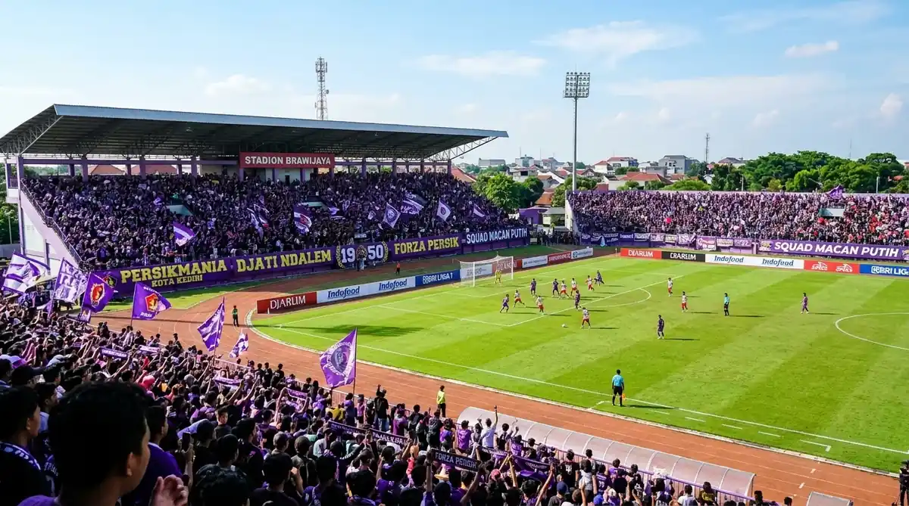

Daftar Isi Artikel
Kediri Event — Persik Kediri memainkan laga kandang BRI Super League 2026/27 di Stadion Brawijaya, Kota Kediri, termasuk kemenangan 2-0 atas Madura United pada 9 Oktober 2026, dengan laga kandang berikutnya melawan Persita pada 1 November dan PSIM Yogyakarta pada 21 November 2026, keduanya pukul 15.30 WIB.
Ringkasan Inti Laga Kandang Persik Kediri:
- Kemenangan Kandang Meyakinkan: Persik menang 2-0 atas Madura United di Stadion Brawijaya pada Jumat, 9 Oktober 2026.
- Dua Laga Kandang November: Persik dijadwalkan menjamu Persita pada 1 November dan PSIM Yogyakarta pada 21 November 2026.
- Waktu Kick-off Serentak: Kedua laga kandang bulan November tersebut dijadwalkan mulai pukul 15.30 WIB.
- Verifikasi Pra-Pertandingan: Jadwal dan lokasi pertandingan dapat berubah sewaktu-waktu, cek ulang sebelum membeli tiket atau berangkat.
- Pembaruan Rutin: Halaman ini kami perbarui berkala setelah setiap pekan pertandingan dan setiap ada perubahan rilis resmi.
Tabel Jadwal dan Hasil Persik Kediri (Oktober-November 2026)
Dalam periode 9 Oktober sampai akhir November 2026, Persik memainkan tiga laga kandang dan tiga laga tandang yang sudah tercatat dalam jadwal kompetisi resmi operator liga:
| Tanggal & Waktu | Pertandingan | Venue / Stadion | Status |
|---|---|---|---|
| Jumat, 9 Okt 2026 15.30 WIB |
Persik 2-0 Madura United | Stadion Brawijaya, Kediri | Selesai |
| Minggu, 18 Okt 2026 19.00 WIB |
Persib Bandung vs Persik | Stadion Si Jalak Harupat, Kab. Bandung | Tandang (Selesai) |
| Minggu, 1 Nov 2026 15.30 WIB |
Persik vs Persita | Kandang Persik (Konfirmasi Panpel) | Akan Datang |
| Minggu, 8 Nov 2026 15.30 WIB |
Bali United vs Persik | Stadion Kapten I Wayan Dipta | Tandang |
| Sabtu, 21 Nov 2026 15.30 WIB |
Persik vs PSIM Yogyakarta | Kandang Persik (Konfirmasi Panpel) | Akan Datang |
| 27 / 29 Nov 2026 19.00 WIB |
Borneo FC vs Persik | Stadion Batakan, Balikpapan | Tandang (Cek Tanggal) |
Catatan: Jadwal Desember 2026 dan seterusnya akan kami tambahkan setelah operator liga merilis daftar resmi. Tanggal laga tandang melawan Borneo FC ditandai khusus karena dua sumber jadwal mencantumkan tanggal berbeda (27 vs 29 November).
Hasil Laga Kandang Terakhir: Persik 2-0 Madura United
Persik Kediri sukses mengamankan poin penuh dengan mengalahkan Madura United 2-0 di Stadion Brawijaya pada Jumat, 9 Oktober 2026. Dua gol penentu kemenangan diborong oleh Eduardo Barbosa pada paruh babak pertama, sekaligus memutus rekor kemenangan beruntun tim tamu.
- Patahkan Tren Positif Lawan: Madura United mengawali musim dengan torehan tiga kemenangan beruntun sebelum akhirnya tunduk di hadapan Macan Putih.
- Keunggulan Jumlah Pemain: Tim tamu harus bermain dengan sepuluh pemain setelah penyerang Dimitar Mitkov diganjar kartu merah menjelang peluit akhir babak pertama.
- Taktik Pelatih Efektif: Pelatih Persik, Marcos Reina Torres, menilai kemenangan ini sangat layak diraih karena anak asuhnya menjalankan skema transisi dan penguasaan bola dengan disiplin tinggi.
- Antusiasme Suporter: Laga sarat gengsi ini disaksikan langsung oleh 2.307 penonton (sekitar 26 persen dari kapasitas stadion) yang tertib memadati tribun Brawijaya.

Lautan suporter Persikmania memadati tribun Stadion Brawijaya memberikan dukungan penuh bagi Macan Putih.
Mengapa Jadwal dan Lokasi Laga Kandang Bisa Berubah
Jadwal dan lokasi pertandingan sepak bola profesional dapat mengalami pergeseran sewaktu-waktu akibat keputusan penyesuaian hak siar televisi, pemeliharaan rumput stadion, maupun izin keamanan kepolisian setempat.
Sebagai contoh nyata, pada awal musim 2025/26 (Agustus 2025), panpel Persik sempat mengalihkan laga kandang melawan Madura United ke Stadion Gelora Joko Samudro Gresik karena Stadion Brawijaya masih merampungkan proses renovasi fasilitas lampu dan rumput. Meskipun musim ini Persik sudah bermain penuh di rumah sendiri, preseden ini mengingatkan pentingnya memeriksa konfirmasi panpel sebelum berangkat ke stadion.
Cara Mengecek Jadwal Paling Akurat
Agar rencana menonton Anda tidak terganggu oleh perubahan mendadak, berikut tiga saluran informasi terpercaya untuk memantau jadwal Persik:
- Pantau Akun & Situs Resmi Persik Kediri: Saluran media sosial klub adalah sumber tercepat untuk pengumuman jam kick-off, kepastian lokasi stadion, dan informasi pembukaan tiket online.
- Rilis Resmi Operator Kompetisi: Cek pengumuman operator liga secara berkala untuk mengetahui penyesuaian tanggal akibat padatnya kalender turnamen nasional.
- Kunjungi Halaman Kediri Event: Tim redaksi kami memperbarui halaman ini secara rutin setelah pekan pertandingan berakhir dan setiap kali ada rilis resmi dari panitia.
Tips Menonton Laga Kandang di Stadion Brawijaya
Untuk memastikan pengalaman menonton di Stadion Brawijaya berjalan aman, tertib, dan menyenangkan, terapkan empat tips esensial berikut:
- Datang Lebih Awal: Hadir minimal 60–90 menit sebelum sepak mula membantu Anda menghindari antrean padat di pintu pemeriksaan serta kemacetan di Jalan Ahmad Yani.
- Siapkan E-Ticket di Ponsel: Unduh atau tangkap layar tangkapan e-ticket dan kode barcode tiket digital Anda terlebih dahulu agar proses pindai di pintu masuk tetap lancar meski sinyal seluler padat.
- Pilih Kantong Parkir Resmi: Gunakan area parkir yang dikelola resmi di sekitar stadion dan patuhi arahan petugas dishub serta aparat kepolisian.
- Patuhi Regulasi Barang Bawaan: Jangan membawa flare, kembang api, botol kaca, maupun senjata tajam demi kenyamanan bersama seluruh keluarga dan penonton di tribun.
Pertanyaan yang Sering Diajukan (FAQ)

Ditulis oleh: Erlang Sinatrya Putra Yusya
Event Content Specialist & EditorSpesialis liputan sepak bola, olahraga kompetisi, dan agenda hiburan di Kediri Event. Berkomitmen menghadirkan rekap skor, jadwal terverifikasi, dan panduan matchday terbaik bagi Persikmania serta warga Kediri Raya.
Profil Kediri Event